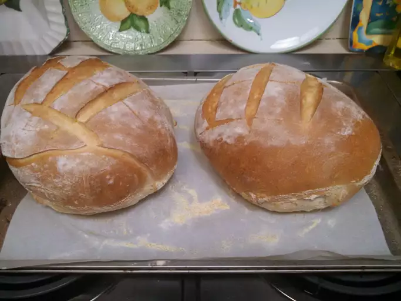

Sourdough Rolls

Description
Ever wondered what would complement that spaghetti and meatball dinner? Or, that
delicious roast chicken? You guessed it... nice warm and soft sourdough rolls. Here is a
recipe for a no-nonsense sourdough rolls that would complete your dinner or can be
enjoyed by themselves. Your kids and spouse will be craving for some more!! Original recipe is from
AllRecipe's Sourdough Rolls
Ingredients
- 2.5 cups sourdough starter
- 1.5 cups water
- 1 (.25 ounce) package active dry yeast
- 3 tablespoons butter, melted
- 3 tablespoons white sugar
- 6 cups bread flour
- 1 teaspoon salt
- 2 tablespoons cornmeal, or as needed
Steps
- Bring sourdough starter to room temperature.
- Heat water to 120 degrees F (49 degrees C) to 130 degrees F (54 degrees C) in a saucepan. Transfer to a glass bowl; add yeast. Cover with plastic wrap; let stand about 10 minutes.
- Stir melted butter and sugar together in a bowl. Add butter mixture to yeast water; stir in starter.
- Combine 3 cups flour and salt in a large bowl. Add starter mixture slowly; mix well. Stir in 2 cups flour; turn dough out onto a lightly floured surface.
- Knead in as much remaining flour as possible to create a stiff, smooth ball, at least 10 minutes. Transfer ball to a lightly oiled bowl; cover with plastic wrap. Let rise until doubled, 45 minutes to 2 hours.
- Punch dough down; turn out onto a floured surface. Divide into 14 balls; cover and let rise for 30 minutes.
- Preheat oven to 375 degrees F (190 degrees C). Sprinkle cornmeal onto a baking sheet; place dough balls on top.
- Place baking sheet into the preheated oven. Spray the walls of the oven with water once to create steam; bake until tops are golden, for a total of 20 to 25 minutes. Cool on a wire rack.